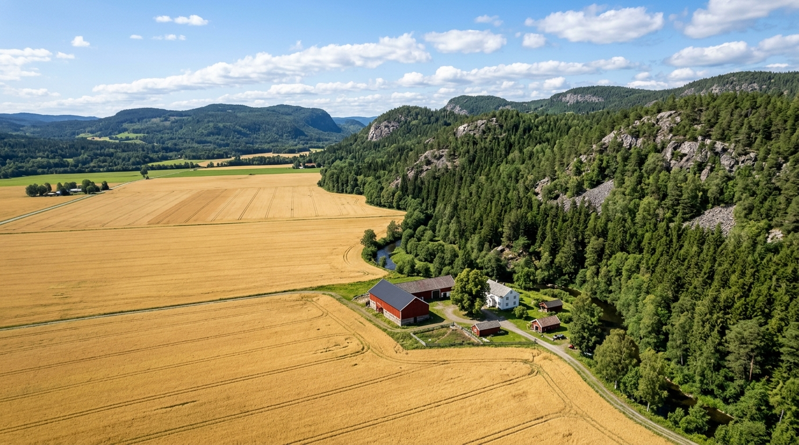
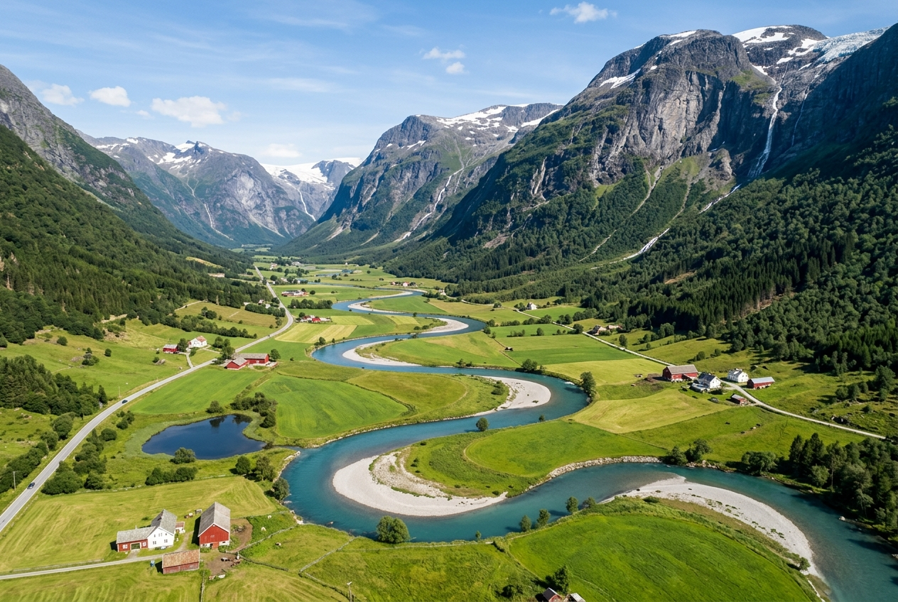

Løsmasser og jord fra istiden
Det er lite løsmasser i Norge sammenliknet med land som ikke har vært nediset. Hos oss har sterk breerosjon fraktet mye ut utenfor kysten, så vi ser ofte naken berggrunn.
Da de siste isbreene smeltet ned på slutten av istiden, ble løsmassene som breene førte med seg, liggende igjen som en spredt utover i terrenget. Bunnmorener er utbredt over store deler av Norge, og morenejord er den vanligste jordarten i landet.
Endemorener – der isen stoppet, og Raet
I perioder med mye vintersnø og kjølige somre vokser isbreene, og brefronten skyver løsmasser foran seg som en bulldoser. Når klimaet blir mildere og framstøtet stopper, blir det liggende ryggformede løsmasseavsetninger: sidemorener, eller (der smeltevannelver førte løsmasser ut i havet rett foran isbreen).
Den største morenen fra istiden i Norge kalles . Den er synlig mange steder fra Finnmark til Østfold (og fortsetter gjennom Sverige og Finland), og hovedveiene i Østfold og Vestfold ligger til dels oppå denne vollformede ryggen. Raet ble dannet i en ny kald klimaperiode mellom 12 800 og 11 500 år før nåtid, da brefronten rykket fram etter å ha smeltet tilbake fra Berlin til Indre Oslofjord. Breens tyngde presset jordskorpa ned opptil 150 meter, slik at havet gikk inn til brefronten og bygde opp store isranddeltaer (som i dag gir viktige sand- og grusressurser), mens finkornet leire ble avsatt utenfor.
Lokale eksempler fra Telemark:
Jomfruland (Kragerø): En synlig del av Raet som steg opp av havet gjennom landhevingen. Bølger fra Skagerrak har vasket bort finstoff på yttersiden så rullesteinene (bl.a. larvikitt og rombeporfyr) ligger igjen, mens innsiden har sand, skog og jordbruk.
Geiteryggen (Skien): Et stort isranddelta bygd opp til datidens marine grense (ca. 147 moh.) da breelver spylte sand og grus ut i havet – i dag utnyttet som et av Norges viktigste grustak (Skyggestein grustak) og til Skien lufthavn Geiteryggen.


Marin grense og marin leire
Tyngden av innlandsisen presset landet ned – kraftigst der ismassene var tykkest. Da breene smeltet tilbake i kystområdene, oversvømte havet de laveste delene av det som i dag er tørt land. Det høyeste nivået havet har hatt etter siste istid, kaller vi . Den er høyere enn 200 meter ved indre Oslofjord (høyeste registrerte i Norge er 220 moh.), opp mot 180 meter i indre Trondheimsfjorden, men bare 6–8 meter lengst sør på Jæren.
I terrenget under den marine grensen (gammel havbunn) er det avsatt lag av . Dette skaper en tydelig sammenheng mellom landbruk og kvikkleirefare: På den ene siden er den marine leira næringsrik og lettdyrket, og utgjør Norges viktigste jordressurser for korndyrking (på Østlandet, i Trøndelag og i lavlandet i Telemark). På den andre siden er det bare under den marine grensen det finnes marin leire – og derfor også bare der ferskvann kan vaske ut saltet og danne ustabil kvikkleire (som i Skien, Porsgrunn, på Romerike og i Trøndelag).


Raviner

Områder med marin leire kan ha blitt sterkt omformet etter at de steg opp av havet. En spesiell landform som dannes i slike områder med leirjord, er : dype V-daler som elver og bekker har gravd ut i leirslettene (for eksempel ved gårdene østre og vestre Kjos på Hovin i Ullensaker på Romerike, mot elva Leira).
Repetisjonsoppgaver
- Hvordan dannes en bunnmorene? Hva er typisk for morenemateriale?
- Hva er en endemorene?
- Hva er Raet, og hvor i landet kan vi finne det? Gjengi kort hvordan det ble dannet.
- Hva er marin grense? Prøv å finne ut høyden på den marine grensen der du bor. (Høyeste registrerte marin grense i Norge er 220 meter over havet.)
- Hva er et ravinelandskap?
Ordliste
Lisens: Alle fotografiske illustrasjoner og geologiske figurer i Images/ er egenproduserte for dette undervisningsopplegget under åpen lisens (CC0 1.0 / CC BY 4.0).